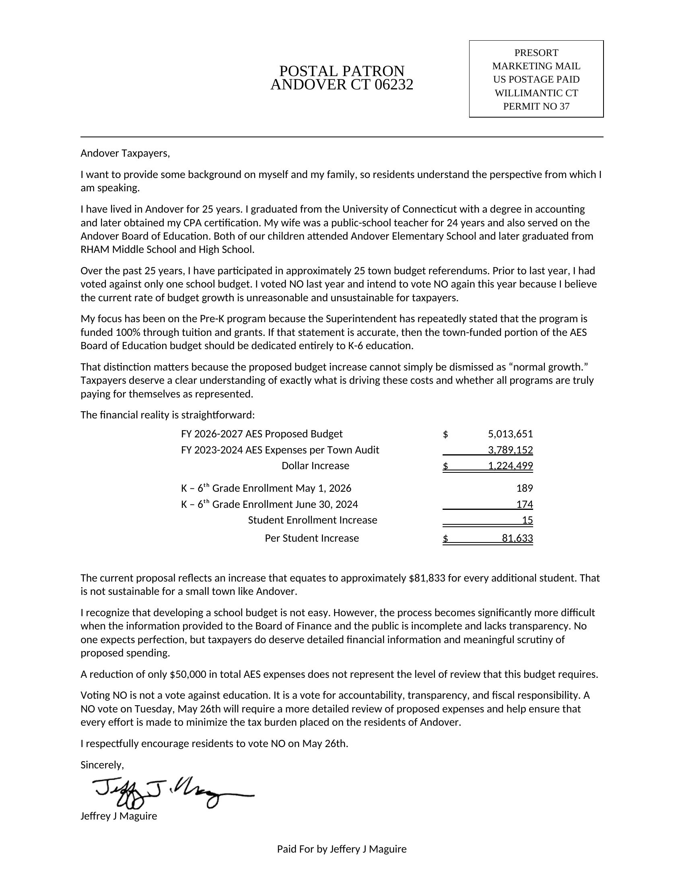

Andover's First Selectman sent a mailer this week urging a NO vote on the May 26 AES budget. The numbers in it don't add up. Here's what's actually true.

The mailer's headline figure isn't per-student cost. It's a number designed to sound alarming.
Mr. Maguire arrives at the $81,833 figure by dividing the three-year AES budget increase ($1,224,499) by the three-year change in K-6 enrollment (15 students). That's not how per-student cost works.
Per-student cost is the budget divided by the number of students. Not the change in budget divided by the change in students. By the same arithmetic, a household that got a $30,000 raise over three years and had a new baby would conclude the baby costs $30,000 a year.
Andover's actual per-student spending under the proposed budget is approximately $26,500, in line with Connecticut elementary norms.
Connecticut's own data tells the opposite of Mr. Maguire's story. Three independent measures, all pointing the same way.
Connecticut publishes Net Current Expenditures Per Pupil (NCEP) for every district every year. For 2024-25:
Andover spent less per pupil than 16 of 21 elementary-only districts in its peer group statewide.
Over the five years from 2020-21 to 2024-25:
Andover's per-pupil cost grew at roughly half the peer-group average rate. AES has been one of the slower-growing elementary districts in its peer group, not a runaway-spending district.
From FY 2020-21 to FY 2025-26, Andover's total town budget (General Government, AES, and the RHAM levy combined):
Over that same period, inflation rose 23.1%, and Social Security cost-of-living adjustments rose 28.8%. A retiree on Social Security saw their benefits rise ten times faster than the entire Andover tax burden.
Even with the proposed FY 2026-27 budget, six-year cumulative growth is about 9.2%, still well under both inflation and COLA.
The mailer calls Andover's budget growth "unreasonable and unsustainable." The opposite is closer to true.
A town whose total budget rose 2.9% over five years while inflation rose 23.1% has been the one absorbing the squeeze, not the one driving it. Andover's per-pupil spending grew at roughly half the peer-group rate. The town has been running unusually lean by every measure available.
The proposed FY 2026-27 AES budget does represent a meaningful single-year jump, about 9.8% over FY 2025-26. That's the same 9.8% figure that appeared above in a different context (Andover's per-pupil growth over the previous five years). Both numbers are real, and the coincidence is just that. The point: even with this single-year jump on top of the five-year per-pupil trend, the cumulative picture is still well below inflation, which rose 23.1% over those same five years. That's a conversation worth having on its merits. The Board of Finance has held public meetings on exactly that topic. Mr. Maguire was at those meetings.
A NO vote doesn't re-open that conversation. It produces another vote, a few weeks later, on essentially the same budget.
Andover's two ballot questions show what we spend, but not where the revenue comes from. That changes how the numbers read.
When you vote Tuesday, you'll see three separate budget categories. A town budget of $4.36 million covers General Government plus the Capital budget. The Board of Education budget is $5.01 million for Andover Elementary School. RHAM appears as a $4.15 million levy on the town side. Each looks like a stand-alone bill.
But Andover, like every Connecticut town with public schools, receives an Education Cost Sharing (ECS) grant from the state, $2.08 million this year. The grant is calculated using student counts, district enrollment, and local property wealth. It exists because Andover has schools.
ECS is legally unrestricted: the state pays it to the town, and the town decides how to account for it. There's no state law requiring towns to credit ECS to one budget side or the other. Different towns make different choices. Monroe treats ECS as town-side revenue. Manchester pulls it explicitly out of the town side to offset the school appropriation. The choice is local, and Andover's was made when the budget was bifurcated by charter amendment in November 2022.
Andover currently records ECS as general town revenue, reducing the town-side tax requirement. The schools that generated the revenue see none of it on the ballot.
The same $11.45 million in local funding, split two ways:
The total tax bill is identical either way. The mill rate doesn't change. This isn't about whether the town spends too much or too little on schools. It's about how the spending is presented in two separate ballot questions, and how that presentation shapes what voters think they're voting on.
A nearly identical question was contested in East Hampton in 2018, when most of a $700,000 ECS grant was allocated to reduce a general tax increase rather than to the schools. Education advocates argued the money belonged with the schools. The finance director's defense, that ECS reduced what the schools needed from taxes, was technically accurate, and both descriptions were true at the same time. The labeling choice mattered politically because each side gets voted on separately.
State law allows towns to make this allocation either way. It's worth a conversation with the Board of Finance.
Note: the 50/50 split between AES and RHAM in the comparison above is an approximation. Student counts and per-pupil costs differ between the two, so a more precise allocation would shift the numbers somewhat. But the broader point, that about $2 million in school-driven state revenue is currently invisible on the school side of the ballot, holds.
The mailer doesn't say so, but Jeff Maguire is Andover's First Selectman. He participated in the budget process he's now asking voters to reject.
Under the town charter, the First Selectman is an ex officio member of every board, including Finance and Education. The provision had been mostly dormant for years. Mr. Maguire began exercising it this year, attending many BOF and BOE meetings and pressing hard on financial discussions.
He was in the room as this budget was built. He had standing to ask questions, request data, and weigh in at every stage. He did all of those things. The boards heard him out and produced this budget anyway.
The mailer is addressed to "Andover Taxpayers." It is not from one. The disclosure at the bottom identifies Mr. Maguire personally, with no mention that he is the town's First Selectman.
An ethics complaint was filed with the State Board of Ethics regarding the mailer. The complaint was dismissed, which is what happens routinely when alleged conduct doesn't fall under state ethics jurisdiction. It tells us nothing about whether the mailer was a good-faith effort.
At the Board of Education meeting on May 13, 2026, Mr. Maguire spoke during public comment about the complaint. His own words, from the meeting recording:
I look at this as targeting and, you know, you're attempting to squash total dissent. And it's not going to work on me.
— Jeff Maguire, BOE meeting, May 13, 2026
Then, in the same address:
I told you, Caitlin, that I didn't want to file any Freedom of Information requests, but I've decided to reverse that course. So I'm going to give you three requests for information directly to you as the Chairperson…
— Jeff Maguire, BOE meeting, May 13, 2026
Read those two passages back to back. Mr. Maguire had previously told the Chair he wouldn't file FOIA requests. After the ethics complaint, he changed his mind and served three requests on her personally, explicitly framing them as a response.
FOIA is a legitimate tool. Filing FOIAs as announced retaliation against a board chair, in public comment, in front of the body she chairs, is a different thing. The First Selectman is telling Andover, on the record, that pushback against his actions will result in escalation.
A NO vote doesn't produce the scrutiny the mailer says we need. The scrutiny already happened.
The Board of Finance held public meetings on the budget. The Board of Education published monthly packets. The audited financial statements are public. Mr. Maguire, as ex officio member of both boards, was in those rooms raising concerns directly with the people doing the work.
The BOF and BOE listened, considered, and produced this budget. A NO vote doesn't reopen that process. It produces another vote, weeks later, on essentially the same budget, and asks the rest of us to pay for the second referendum.
Last year's first referendum failed. The BOE came back with a budget $163,694 lower, about 1.2% of the total. That's the realistic shape of a re-vote.
If you want real scrutiny, the next BOF meeting is public.
Andover Town Hall · 17 School Road
Polls open 6:00 AM – 8:00 PM
Town of Andover FY 2026-27 Proposed Budget (as of 5/6/26). The figures used throughout this page: AES at $5,013,651, RHAM at $4,153,318, town side at $4,362,487, ECS at $2,084,974. Official copy at andoverconnecticut.org (primary). Backup copy at andoverct.info.
Andover budget analysis (civic report). Detailed analysis of multi-year AES, RHAM, and town-side budgets, the NCEP peer comparison, and the 2.9% / 23.1% / 28.8% inflation comparison. View the report.
Connecticut SDE Net Current Expenditures Per Pupil (NCEP). The state's official per-pupil cost measure, published annually for every district. EdSight · CT SDE.
Andover BOE recording, May 13, 2026. The meeting at which Mr. Maguire
announced reversal of his decision not to file FOIA requests, in response
to the ethics complaint.
All BOE recordings, minutes, and agendas.
The May 13 recording specifically:
Zoom recording
(passcode: X+n+E%e0).
Andover preschool funding (civic report). Detail on how preschool is funded entirely through tuition and grants, and is accounted for separately from the AES general fund. View the report.
ECS treatment in bifurcated budgets. The Connecticut General Assembly's Program Review and Investigations Committee study of the state's public school finance system, which describes the state's education aid grants: 2001 PRI report (PDF) · overview. CT Mirror's overview of how the ECS formula works: How are CT schools funded?. The 2018 East Hampton controversy in which $700K of ECS was allocated to reduce a general tax increase rather than the school side: Passage hinges on $700K for schools (Middletown Press) and the follow-up. State law does not prescribe how a bifurcated budget should attribute ECS revenue.
U.S. Bureau of Labor Statistics, Consumer Price Index. The 23.1% inflation figure (Jan 2020 to Jan 2026). CPI data.
Social Security Administration, COLA history. The 28.8% cumulative cost-of-living adjustment figure. SSA COLA history.
Original Maguire mailer and recreation. The mailer received by Andover households in May 2026: original photograph. The recreation displayed on this page was built to match the original faithfully: same typeface, same layout, same staggered indents in the financial table, same postal headers. Discrepancies present in the original are preserved exactly as published — most notably the $81,633 figure in the table vs. $81,833 in the body paragraph (one digit different), and the misspelled "Jeffery" in the printed disclosure (while the signature line above it correctly reads "Jeffrey"). The recreation is also available as a PDF copy for download. Every reasonable effort was made to match the original; the recreation is not a photographic facsimile and minor visual differences may exist.
{kind=link}